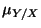
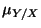

An important type of statistical question arises when we have two non-independent populations and what is of interest is the relationship between the two. This is the subject of regression analysis and correlation analysis.
Theoretically we consider the case of two variables  and
and  . We wish to find the
relationship between them. For example
. We wish to find the
relationship between them. For example  might be the tempertaure at which a chemical
reaction is run and
might be the tempertaure at which a chemical
reaction is run and  is the yield; or
is the yield; or  might be the blood pressure of a patient and
might be the blood pressure of a patient and
 is the estimated chance of a stroke; or
is the estimated chance of a stroke; or  ,
, might be the height and weight
respectively of an individual. If the goal of the analysis is to determine
might be the height and weight
respectively of an individual. If the goal of the analysis is to determine  given
given  ,
and
,
and  can be measured essentially without error, then it is part of regression
analysis. The example given above of temperature and yield would fit this type of situation. On
the other hand if both
can be measured essentially without error, then it is part of regression
analysis. The example given above of temperature and yield would fit this type of situation. On
the other hand if both  and
and  are varying statistically and what is of interest is
the relationship between them, then this is part of correlation analysis. We consider
regression analysis and regression models first.
are varying statistically and what is of interest is
the relationship between them, then this is part of correlation analysis. We consider
regression analysis and regression models first.
We consider the situation where we have a variable (or population)  called a response variable and a second variable (or set of variables)
called a response variable and a second variable (or set of variables)  called a predictor variable or predictor variables. As the names suggest, the ulitmate goal is to
predict
called a predictor variable or predictor variables. As the names suggest, the ulitmate goal is to
predict  given
given  . In the chemical example above,
. In the chemical example above,  , the yield of the reaction, would be the
response variable, while
, the yield of the reaction, would be the
response variable, while  , the temperature, would be the predictor variable. Mathematically we
wish to determine the function which has
, the temperature, would be the predictor variable. Mathematically we
wish to determine the function which has  as the dependent variable and
as the dependent variable and  as the
independent variable:
as the
independent variable:
If  is completeky determined by
is completeky determined by  , the resulting function is called a deterministic model. For example, if
, the resulting function is called a deterministic model. For example, if  were the distance covered by a car moving at
constant speed and
were the distance covered by a car moving at
constant speed and  were the time it would be completely determined and we would have such a
deterministic model. However most situations are not completely determined. We could run
a chemical reaction several times at the same temperature
were the time it would be completely determined and we would have such a
deterministic model. However most situations are not completely determined. We could run
a chemical reaction several times at the same temperature  and each time get a
different yield
and each time get a
different yield  . Therefore rather the a deterministic model, more generally we have a model of
the form
. Therefore rather the a deterministic model, more generally we have a model of
the form
A model such as this is called a statistical model or regression model. We usually
write the random variation as  and then have
and then have
The function  is called the regression equation or regression function and
represents the average value of the response
is called the regression equation or regression function and
represents the average value of the response  for the given
for the given  ,
(sometimes written as ). The term
,
(sometimes written as ). The term  represents the random variation which for
each
represents the random variation which for
each  is a random variable which has a mean of 0.
is a random variable which has a mean of 0.  is called the residual.
is called the residual.
If  consists of a single variable we have a simple regression model while if
consists of a set of variables we have a multiple regression model.
consists of a single variable we have a simple regression model while if
consists of a set of variables we have a multiple regression model.
We start with simple regression. Statistically the data we collect is paired data,
We start by considering simple linear regression models. Here the average response  is
linear in
is
linear in  so that the model has the form
so that the model has the form
The line given by
 is called the regression line while
are the regression parameters.
is called the regression line while
are the regression parameters.  is the regression intercept and represents the
average response when
is the regression intercept and represents the
average response when  , while
, while  is the regression slope. Recall that the slope
of a line gives the change in
is the regression slope. Recall that the slope
of a line gives the change in  per unit change in
per unit change in  . Therefore the regression slope represents
the average change in response per unit change in predictor.
. Therefore the regression slope represents
the average change in response per unit change in predictor.
Suppose that now, assuming this model, we generate  data points
data points
As a first step we graph these data points to form a scatter diagram as in Figure 1.
The estimate for the regression line
 would be the "best" fitted line
would be the "best" fitted line
 to these sampled points.
to these sampled points.
The value  would be an estimate for
would be an estimate for  and the value would be an estimate for
and the value would be an estimate for  .
We need criteria in order to determine thsis "best fitted" line.
.
We need criteria in order to determine thsis "best fitted" line.
For each , if is any fitted line, the value

which is called the sum of squares for error. The best fitted line would be the lione
which minimizes this expression. The squares arise for the same reason that expressions are squared
in the standard deviation, an individual can either be positive or negative. The values  which minimize SSE are called the least squares estimators for
and the fitted
line
which minimize SSE are called the least squares estimators for
and the fitted
line
 is the least squares line or estimated regression line.
is the least squares line or estimated regression line.
To determine the values of  the methods of calculus are used to minimize the expression for SSE
as a function of
the methods of calculus are used to minimize the expression for SSE
as a function of  and . In order to present the solution we intrioduce the following
quantities:
and . In order to present the solution we intrioduce the following
quantities:


All computations in simple linear regression will involve these expressions. Notice that  is the variance of the
is the variance of the  data without the denominator. Similarly
is the variance of the
data without the denominator. Similarly
is the variance of the  data without the denominator and represents the total variation in
response. This will be used later on in this chapter to measure how strong the linear
relationship is. is the covariance of
data without the denominator and represents the total variation in
response. This will be used later on in this chapter to measure how strong the linear
relationship is. is the covariance of  without the denominator and measures how
without the denominator and measures how
 and
and  vary together. Notice that
vary together. Notice that  and are always positive while
will be positive if on average
and are always positive while
will be positive if on average  increases when
increases when  increases and will be negative if on
average
increases and will be negative if on
average  decreases when
decreases when  increases.
increases.
Using the calculus techniques it can be shown that the least squares estimators  for
are given by
for
are given by
We now give an example of determining the least squares line and its use in making a simple forecast.
EXAMPLE 1
Consider the following data
Determine the least squares line and forecast the average value of response  for
for 
Here and . The table below gives the computations.
Hence we
find that
 and
and
 . Therefore
. Therefore
In order to assign statistical values to the predictions from  ,
assumptions must be made on the distribution of the random component. The most common assumption
is called the normal linear model. This model consists of the following assumptions
,
assumptions must be made on the distribution of the random component. The most common assumption
is called the normal linear model. This model consists of the following assumptions
(1) For each we have
where
 (called the residual).
(called the residual).
(2) Each residual
 has a normal distribution with mean zero
and common variance .
has a normal distribution with mean zero
and common variance .
(3)Tthe and hence the
 are independent.
are independent.
These assumptions mean that each has a mean of and its distribution is normal and further for each point the variance is the same. Pictorially this is
4.53truein by 2.26truein (NLM scaled 850)
The normal linear model then has three parameters and several questions are essential in a regression analysis. These are
[1] How are estimates and hypothesis tests done on the
parameters
. Here testing the regression slope  is the most
important since if there is no linear relationship.
is the most
important since if there is no linear relationship.
[2] How are estimates developed for the mean response  for a
given value of
for a
given value of 
[3] How are estimates developed for the actual response  for a
given value of
for a
given value of 
The basic results concerning the parameters are given in the following theorems and corollaries
[1] Theorem is an estimator of the model variance . Further
[2] Theorem The distribution of the least squares
estimator for  follows a normal distribution with
follows a normal distribution with
[a] Corollary A  confidence interval for the
regression slope
confidence interval for the
regression slope  is given by
is given by
[b] Corollary Tests of null hypotheses of the form
[3] Theorem The distribution of  the least squares
estimator for
the least squares
estimator for  follows a normal distribution with
follows a normal distribution with

[a] Corollary A  confidence interval for the
regression intercept
confidence interval for the
regression intercept  is given by
is given by
[b] Corollary Tests of null hypotheses of the form